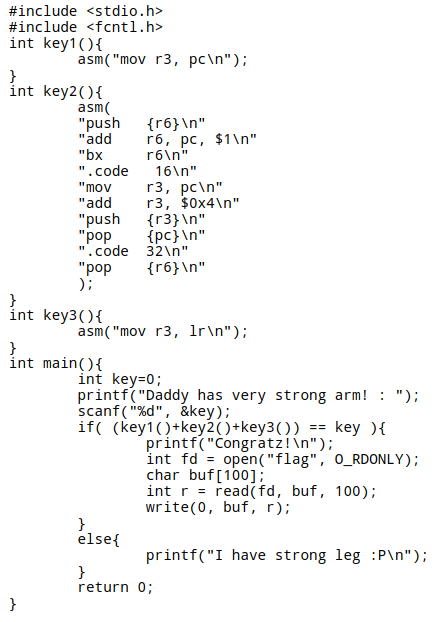
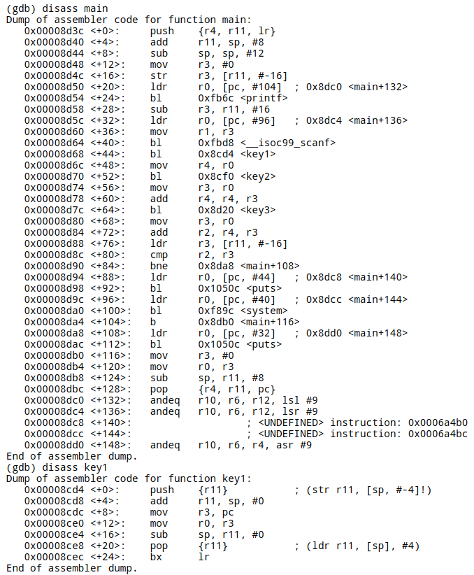
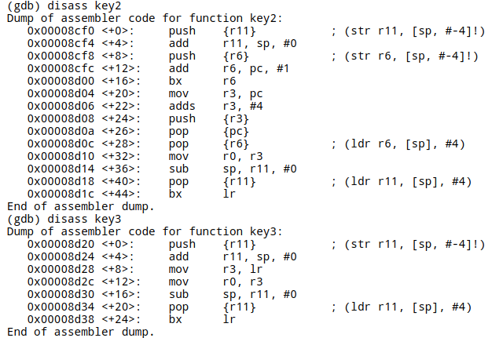
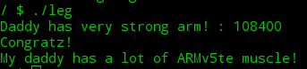

<!DOCTYPE html>
<html>
<head><meta name="generator" content="Hexo 3.9.0">
  <meta charset="utf-8">
  

  
  <title>8-leg | Hexo</title>
  <meta name="viewport" content="width=device-width, initial-scale=1, maximum-scale=1">
  <meta name="description" content="知识储备:  PC代表程序计数器，流水线使用三个阶段，因此指令分为三个阶段执行：1.取指（从存储器装载一条指令）；2.译码（识别将要被执行的指令）；3.执行（处理指令并将结果写回寄存器）。而R15（PC）总是指向“正在取指”的指令，而不是指向“正在执行”的指令或正在“译码”的指令。一般来说，人们习惯性约定将“正在执行的指令作为参考点”，称之为当前第一条指令，因此PC总是指向第三条指令。当ARM状态">
<meta property="og:type" content="article">
<meta property="og:title" content="8-leg">
<meta property="og:url" content="http://yoursite.com/2019/05/18/8-leg/index.html">
<meta property="og:site_name" content="Hexo">
<meta property="og:description" content="知识储备:  PC代表程序计数器，流水线使用三个阶段，因此指令分为三个阶段执行：1.取指（从存储器装载一条指令）；2.译码（识别将要被执行的指令）；3.执行（处理指令并将结果写回寄存器）。而R15（PC）总是指向“正在取指”的指令，而不是指向“正在执行”的指令或正在“译码”的指令。一般来说，人们习惯性约定将“正在执行的指令作为参考点”，称之为当前第一条指令，因此PC总是指向第三条指令。当ARM状态">
<meta property="og:locale" content="en">
<meta property="og:image" content="http://yoursite.com/2019/05/18/8-leg/8-1.png">
<meta property="og:image" content="http://yoursite.com/2019/05/18/8-leg/8-2.png">
<meta property="og:image" content="http://yoursite.com/2019/05/18/8-leg/8-3.png">
<meta property="og:image" content="http://yoursite.com/2019/05/18/8-leg/8-4.png">
<meta property="og:updated_time" content="2019-05-18T07:57:48.000Z">
<meta name="twitter:card" content="summary">
<meta name="twitter:title" content="8-leg">
<meta name="twitter:description" content="知识储备:  PC代表程序计数器，流水线使用三个阶段，因此指令分为三个阶段执行：1.取指（从存储器装载一条指令）；2.译码（识别将要被执行的指令）；3.执行（处理指令并将结果写回寄存器）。而R15（PC）总是指向“正在取指”的指令，而不是指向“正在执行”的指令或正在“译码”的指令。一般来说，人们习惯性约定将“正在执行的指令作为参考点”，称之为当前第一条指令，因此PC总是指向第三条指令。当ARM状态">
<meta name="twitter:image" content="http://yoursite.com/2019/05/18/8-leg/8-1.png">
  
    <link rel="alternate" href="/atom.xml" title="Hexo" type="application/atom+xml">
  
  
    <link rel="icon" href="/favicon.png">
  
  
    <link href="//fonts.googleapis.com/css?family=Source+Code+Pro" rel="stylesheet" type="text/css">
  
  <link rel="stylesheet" href="/css/style.css">
</head>
</html>
<body>
  <div id="container">
    <div id="wrap">
      <header id="header">
  <div id="banner"></div>
  <div id="header-outer" class="outer">
    <div id="header-title" class="inner">
      <h1 id="logo-wrap">
        <a href="/" id="logo">Hexo</a>
      </h1>
      
    </div>
    <div id="header-inner" class="inner">
      <nav id="main-nav">
        <a id="main-nav-toggle" class="nav-icon"></a>
        
          <a class="main-nav-link" href="/">Home</a>
        
          <a class="main-nav-link" href="/archives">Archives</a>
        
      </nav>
      <nav id="sub-nav">
        
          <a id="nav-rss-link" class="nav-icon" href="/atom.xml" title="RSS Feed"></a>
        
        <a id="nav-search-btn" class="nav-icon" title="Search"></a>
      </nav>
      <div id="search-form-wrap">
        <form action="//google.com/search" method="get" accept-charset="UTF-8" class="search-form"><input type="search" name="q" class="search-form-input" placeholder="Search"><button type="submit" class="search-form-submit">&#xF002;</button><input type="hidden" name="sitesearch" value="http://yoursite.com"></form>
      </div>
    </div>
  </div>
</header>
      <div class="outer">
        <section id="main"><article id="post-8-leg" class="article article-type-post" itemscope itemprop="blogPost">
  <div class="article-meta">
    <a href="/2019/05/18/8-leg/" class="article-date">
  <time datetime="2019-05-18T07:29:37.000Z" itemprop="datePublished">2019-05-18</time>
</a>
    
  </div>
  <div class="article-inner">
    
    
      <header class="article-header">
        
  
    <h1 class="article-title" itemprop="name">
      8-leg
    </h1>
  

      </header>
    
    <div class="article-entry" itemprop="articleBody">
      
        <p>知识储备:</p>
<ul>
<li>PC代表程序计数器，流水线使用三个阶段，因此指令分为三个阶段执行：1.取指（从存储器装载一条指令）；2.译码（识别将要被执行的指令）；3.执行（处理指令并将结果写回寄存器）。而R15（PC）总是指向“正在取指”的指令，而不是指向“正在执行”的指令或正在“译码”的指令。一般来说，人们习惯性约定将“正在执行的指令作为参考点”，称之为当前第一条指令，因此PC总是指向第三条指令。当ARM状态时，每条指令为4字节长，所以PC始终指向该指令地址加8字节的地址，即：PC值=当前程序执行位置+8；<br>ARM指令是三级流水线，取指，译指，执行时同时执行的，现在PC指向的是正在取指的地址，那么cpu正在译指的指令地址是PC-4（假设在ARM状态下，一个指令占4个字节），cpu正在执行的指令地址是PC-8，也就是说PC所指向的地址和现在所执行的指令地址相差8。</li>
<li>arm与thumb间的切换<br>1、由arm状态切换到thumb<br>  状态将寄存器的最低位设置为1<br>  BX指令：R0[0]=1，则执行BX<br>  R0指令将进入thumb状态<br>2、由thumb状态切换到ARM状态<br>  寄存器最低位设置为0<br>  BX指令：R0[0]=0，则执行BX<br>  R0指令将进入arm状态</li>
<li>lr寄存器中存储的是子函数的返回地址，那么应该在main()函数的反汇编代码中找key3()函数返回后下一条指令地址：</li>
</ul>
<h1 id="8-leg"><a href="#8-leg" class="headerlink" title="8-leg"></a>8-leg</h1><p>题目中给了源码和反汇编过后的代码<br></p>
<blockquote>
<p>看代码 只要使得key1()+key2()+key3 == key 就可以得到flag</p>
</blockquote>
<p><br><br>首先对于key1() 代码中<br>   0x00008cdc &lt;+8&gt;:        mov    r3, pc<br>   0x00008ce0 &lt;+12&gt;:    mov    r0, r3<br>pc值传给r3 后传给r0 由上面补充的知识可以知道,pc应是当前程序执行位置+8 即r0=0x00008cdc+0x8=0x00008ce4</p>
<p>对于key2() 代码中<br>   0x00008cfc &lt;+12&gt;:    add    r6, pc, #1<br>   0x00008d00 &lt;+16&gt;:    bx    r6<br>   0x00008d04 &lt;+20&gt;:    mov    r3, pc<br>   0x00008d06 &lt;+22&gt;:    adds    r3, #4<br>   0x00008d08 &lt;+24&gt;:    push    {r3}<br>   0x00008d0a &lt;+26&gt;:    pop    {pc}<br>   0x00008d0c &lt;+28&gt;:    pop    {r6}        ; (ldr r6, [sp], #4)<br>   0x00008d10 &lt;+32&gt;:    mov    r0, r3<br>对第一行 r6=pc的地址+8+1=0x00008cfc+0x8+0x1<br>对第二行 bx指令 这条指令表示r6是跳转的目的地址，并且根据地址的最低位确定是否状态切换 为1时 进入thumb状态 为0时 进入arm状态 进入thumb状态时 pc指向当前程序执行位置+4<br>对第三行 r3=0x00008d04+0x4<br>对第四行 r3=r3+0x4<br>对第五行 将r3压入栈中<br>对第六、七行 将pc、r6弹出栈<br>对第八行 将r3的值传给r0<br>所以r0=r3=0x00008d04+0x4+0x4=0x00008d0c</p>
<p>对于key3() 代码中<br>   0x00008d28 &lt;+8&gt;:        mov    r3, lr<br>   0x00008d2c &lt;+12&gt;:    mov    r0, r3<br>lr寄存器存储的是子函数的返回地址,所以应在main函数的反汇编代码中查找key3()函数返回后的下一条指令地址 代码:<br>   0x00008d78 &lt;+60&gt;:    add    r4, r4, r3<br>   0x00008d7c &lt;+64&gt;:    bl    0x8d20 <key3><br>   0x00008d80 &lt;+68&gt;:    mov    r3, r0<br>所以key3()函数的返回值就是0x00008d80</key3></p>
<p>则key1()+key2()+key3()=0x0001a774 由于是%d 要输入十进制数 则转化成108400 运行leg文件 得到flag<br></p>

      
    </div>
    <footer class="article-footer">
      <a data-url="http://yoursite.com/2019/05/18/8-leg/" data-id="ck0ag4lg30009h7th7d5yi3gl" class="article-share-link">Share</a>
      
      
    </footer>
  </div>
  
    
<nav id="article-nav">
  
    <a href="/2019/05/18/9-mistake/" id="article-nav-newer" class="article-nav-link-wrap">
      <strong class="article-nav-caption">Newer</strong>
      <div class="article-nav-title">
        
          9-mistake
        
      </div>
    </a>
  
  
    <a href="/2019/05/16/7-input/" id="article-nav-older" class="article-nav-link-wrap">
      <strong class="article-nav-caption">Older</strong>
      <div class="article-nav-title">7-input</div>
    </a>
  
</nav>

  
</article>

</section>
        
          <aside id="sidebar">
  
    

  
    

  
    
  
    
  <div class="widget-wrap">
    <h3 class="widget-title">Archives</h3>
    <div class="widget">
      <ul class="archive-list"><li class="archive-list-item"><a class="archive-list-link" href="/archives/2019/07/">July 2019</a></li><li class="archive-list-item"><a class="archive-list-link" href="/archives/2019/06/">June 2019</a></li><li class="archive-list-item"><a class="archive-list-link" href="/archives/2019/05/">May 2019</a></li></ul>
    </div>
  </div>


  
    
  <div class="widget-wrap">
    <h3 class="widget-title">Recent Posts</h3>
    <div class="widget">
      <ul>
        
          <li>
            <a href="/2019/07/17/shark-reverse-2/">shark-reverse-2</a>
          </li>
        
          <li>
            <a href="/2019/07/15/C-反汇编与逆向分析学习笔记/">C++反汇编与逆向分析学习笔记</a>
          </li>
        
          <li>
            <a href="/2019/07/12/easy-KeygenMe/">easy_KeygenMe</a>
          </li>
        
          <li>
            <a href="/2019/07/11/reversing-kr-easy-crack/">reversing.kr-easy_crack</a>
          </li>
        
          <li>
            <a href="/2019/07/09/tips/">tips</a>
          </li>
        
      </ul>
    </div>
  </div>

  
</aside>
        
      </div>
      <footer id="footer">
  
  <div class="outer">
    <div id="footer-info" class="inner">
      &copy; 2019 John Doe<br>
      Powered by <a href="http://hexo.io/" target="_blank">Hexo</a>
    </div>
  </div>
</footer>
    </div>
    <nav id="mobile-nav">
  
    <a href="/" class="mobile-nav-link">Home</a>
  
    <a href="/archives" class="mobile-nav-link">Archives</a>
  
</nav>
    

<script src="//ajax.googleapis.com/ajax/libs/jquery/2.0.3/jquery.min.js"></script>


  <link rel="stylesheet" href="/fancybox/jquery.fancybox.css">
  <script src="/fancybox/jquery.fancybox.pack.js"></script>


<script src="/js/script.js"></script>


  </div>
</body>
</html>